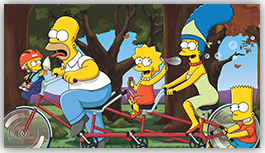

| {{currentTime | date:'shortTime'}} | {{currentTemperature}} |
Movies

-
today's top rentals
most popular
{{swimLane.replace('_', ' ')}}
-
View All ({{media.data[swimLane].count}})
-
-
| {{currentTime | date:'shortTime'}} | {{currentTemperature}} |